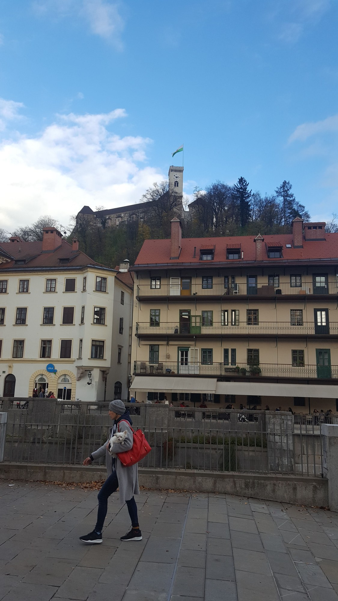
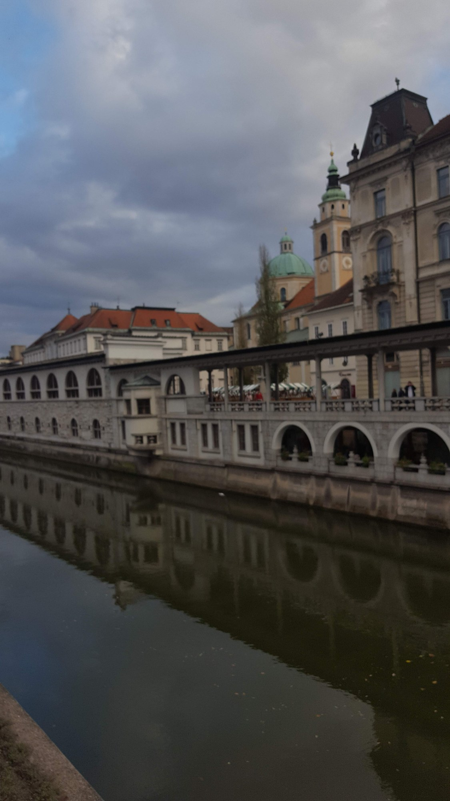

Slovinsko — Lipica a Lublaň
Od hřebčína v Lipici k hradu a nábřeží v Lublani. Fotografie z listopadu 2018.
Pár slov
Lipica není turistická destinace v běžném smyslu — je to nejstarší dosud aktivní hřebčín v Evropě. Lipicáni se rodí jako tmaví a zbělají s věkem. Areál je volně přístupný, koně se pasou kolem alejí lip a okolní krajina kraso je sama o sobě hezká.
🐴 Lipica
Hřebčín lipicánů, alej lip, krasová krajina. (4 fotek · listopad 2018)


Lublaň
Hrad nad městem a nábřeží s tržnicí. Listopad 2018.

